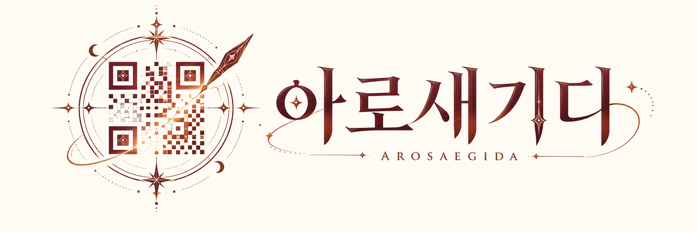

생성을 눌러 주세요.

아로새기다
기록된 길의 끝을 다시 새긴다.
오래 남도록 깊이 새긴다는 이름임.
점을 지우고 더해, 기록된 길의 끝을 다시 새기는 마술임.
기억이 아니라 기록 자체를 다시 씀. 작은 흔적이 방향까지 바꾸는 순간임.
두 손가락을 아래로 쓸면 이 설정이 열립니다.
100%는 칸을 채우는 원의 지름입니다. 키우면 이웃 칸으로 번집니다. 저장하고 시작을 눌러야 적용됩니다.